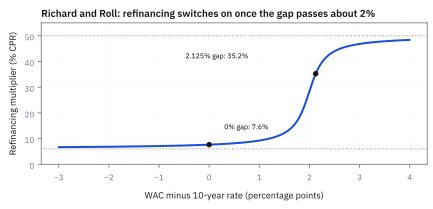

22.2 Prepayment Risk and the Public Securities Association Benchmark
ผู้กู้คืนหนี้ก่อนกำหนดได้ทุกเมื่อ เงินต้นของ pool “30 ปี” จึงกลับมาเร็วหรือช้าตามอัตราดอกเบี้ย และผู้ถือ MBS ได้ราคาที่ขึ้นยากแต่ลงง่าย
ผู้ลงทุนจะซื้อ pass-through \$400 ล้าน ผู้กู้จ่าย 8.125% ผู้ลงทุนได้ 7.50% สินเชื่อปล่อยมาแล้ว 3 เดือนจึงเหลือ 357 งวด เขาถามว่าเงินต้นจะกลับมาโดยเฉลี่ยในกี่ปี ผู้ขายคิดจากตารางผ่อนแล้วตอบว่า “ราว 20.4 ปี” ถ้าตลาดคาดว่าผู้กู้จะคืนก่อนกำหนดตามมาตรฐาน 100 PSA คำตอบคือเท่าไร และถ้าอัตราดอกเบี้ยลงจนคืนเร็วเป็น 200 PSA ล่ะ?
ลองตอบก่อนเปิดเฉลย
ที่ 100 PSA เงินต้นกลับเฉลี่ยใน 11.67 ปี ไม่ใช่ 20.38 ปี และที่ 200 PSA เหลือ 7.69 ปี pool ที่เรียกว่า “30 ปี” จึงทำตัวเหมือนพันธบัตร 12 ปีหรือ 8 ปีก็ได้ แล้วแต่ว่าผู้กู้ตัดสินใจอย่างไร ความไม่รู้นี้คือ prepayment risk ตัวเลขทั้งหมดในหน้านี้มาจาก pool เดียวกับ workbook MBS_Structure ของคอร์ส
ภาพรวมก่อนลงสูตร
ตารางผ่อนของสินเชื่อบ้านสมมติว่าผู้กู้จ่ายตามตารางจนครบ แต่ผู้กู้ในสหรัฐฯ คืนเงินต้นเกินตารางได้ทุกเมื่อ เงินส่วนเกินนี้เรียก prepayment และเกิดได้หลายทาง: ขายบ้านแล้วต้องปิดหนี้ทั้งก้อน กู้ใหม่ที่อัตราถูกกว่ามาปิดก้อนเดิม (refinance) ผิดนัดแล้ว agency หรือผู้รับประกันจ่ายหนี้แทน หรือบ้านเสียหายจากไฟหรือน้ำท่วมแล้วเงินประกันมาปิดหนี้ ทุกทางทำให้เงินต้นมาถึงผู้ถือ MBS เร็วกว่าตาราง
ตลาดต้องการภาษากลางเพื่อพูดถึงความเร็ว จึงวัดเป็นอัตราคืนก่อนกำหนดต่อปี (CPR) แปลงเป็นรายเดือน (SMM) เพื่อเดินตาราง และใช้เส้นมาตรฐานของ Public Securities Association (PSA) เป็นหน่วย จากนั้นวัดผลด้วย average life ว่าเงินต้นกลับมาเฉลี่ยเมื่อไร ตัด pool เป็นชิ้นที่ได้แต่เงินต้น (PO) กับชิ้นที่ได้แต่ดอกเบี้ย (IO) เพื่อดูว่าความเร็วย้ายมูลค่าไปทางไหน แล้วใช้แบบจำลองของ Richard และ Roll ทำให้ความเร็วขึ้นกับอัตราดอกเบี้ย ซึ่งทำให้ duration และ convexity ของพันธบัตรธรรมดาใช้กับ MBS ตรง ๆ ไม่ได้
รูปด้านล่างคือภาพทั้งหน้าในรูปเดียว: pool เดียวกัน สัญญาเดียวกัน แต่หนี้หายไปเร็วต่างกันมาก แล้วแต่ความเร็วที่ผู้กู้เลือก
รูป — pool เดียวกัน หนี้หายเร็วต่างกันตามความเร็วการคืนก่อน
ศัพท์ที่ใช้ในหัวข้อนี้
- Prepayment
- เงินต้นที่ผู้กู้คืนเกินตาราง จากการขายบ้าน กู้ใหม่เพื่อปิดหนี้เดิม (refinance) โปะเพิ่ม หรือเงินที่ผู้รับประกันจ่ายแทนเมื่อผิดนัดหรือบ้านเสียหาย เงินก้อนนี้ส่งต่อให้ผู้ถือ MBS ทันที
- CPR และ SMM
- Conditional prepayment rate คือสัดส่วนของหนี้ที่ยังค้างซึ่งถูกคืนก่อนกำหนดในหนึ่งปี single monthly mortality คืออัตราเดียวกันแปลงเป็นรายเดือนแบบทบ ตลาดคุยกันเป็น CPR แต่การคำนวณเดินด้วย SMM
- PSA benchmark
- เส้น CPR มาตรฐานที่ไต่ขึ้นตามอายุสินเชื่อ 30 เดือนแล้วคงที่ 6% ความเร็วอื่นพูดเป็นกี่เท่าของเส้นนี้ เช่น 200 PSA เป็นภาษากลางในการเสนอราคา ไม่ใช่คำพยากรณ์
- Average life
- เวลาเฉลี่ยที่เงินต้นแต่ละดอลลาร์กลับมา ใช้บอกว่าตราสารที่ผ่อนคืนมีอายุจริงเท่าไร ขึ้นกับความเร็วการคืนก่อนกำหนดที่สมมติ
- Contraction risk และ extension risk
- อัตราลงแล้วเงินต้นกลับเร็วในวันที่เอาไปลงทุนต่อได้แต่อัตราต่ำ คือ contraction risk อัตราขึ้นแล้วเงินต้นค้างนานในวันที่อยากได้คืนไปลงทุนที่อัตราสูง คือ extension risk ผู้ถือ MBS เสียทั้งสองทาง
- Principal-only (PO) และ interest-only (IO)
- สองชิ้นที่ตัดจาก pass-through: PO ได้เงินต้นทุกดอลลาร์ IO ได้ดอกเบี้ยทุกดอลลาร์ ใช้แยกผลของความเร็ว เพราะคืนเร็วทำให้ PO ได้เงินเร็วแต่ทำให้ IO เสียฐานดอกเบี้ย
- Effective duration และ negative convexity
- Duration และ convexity ที่วัดโดยคิดราคาใหม่ทั้งชุดเมื่ออัตราขยับ เพราะเงินสดเปลี่ยนตามอัตรา MBS มี convexity ติดลบ คือราคาขึ้นน้อยเมื่ออัตราลง แต่ลงเต็มเมื่ออัตราขึ้น
สัญลักษณ์และหน่วย
| สัญลักษณ์ | ความหมาย | หน่วย |
|---|---|---|
| $\mathrm{CPR},\ \mathrm{SMM}$ | อัตราคืนก่อนกำหนดต่อปี และต่อเดือน | สัดส่วน |
| $a,\ k$ | อายุสินเชื่อนับจากวันปล่อยกู้ และความเร็วเป็นกี่เท่าของ PSA (100 PSA คือ $k=1$) | เดือน, เท่า |
| $B_{t-1},\ A_t$ | หนี้ต้นเดือน $t$ และค่างวดที่คิดใหม่จากหนี้นั้น | ล้านดอลลาร์ |
| $P_t,\ PP_t$ | เงินต้นตามตาราง และเงินคืนก่อนกำหนด | ล้านดอลลาร์ต่อเดือน |
| $\mathrm{AL}$ | average life | ปี |
| $V_{PO},\ V_{IO}$ | มูลค่าวันนี้ของชิ้น PO และ IO | ดอลลาร์ หรือล้านดอลลาร์ |
| $y,\ \Delta y$ | อัตราที่ใช้คิดลดต่อปี (ทบรายเดือน) และขนาดที่ขยับ | สัดส่วนต่อปี |
| $D_{\rm eff},\ C_{\rm eff}$ | effective duration และ effective convexity | ปี, ปี² |
| $\Delta$ | ส่วนต่าง WAC ลบอัตรา 10 ปี ในแบบจำลอง Richard and Roll | สัดส่วนต่อปี |
ขั้นที่ 1 — อัตราคืนก่อนกำหนดรายปีเป็นรายเดือน
ตลาดพูดว่า pool นี้คืนก่อนกำหนด “6% ต่อปี” หมายความว่าหนี้ที่ยังค้างอยู่ 6% ถูกคืนก่อนกำหนดในหนึ่งปี แต่ตารางเดินทีละเดือน ต้องหาอัตรารายเดือนที่ทบกัน 12 เดือนแล้วได้ 6% พอดี
บรรทัดแรกคือหัวใจ: หนี้หนึ่งดอลลาร์จะรอดจากการคืนก่อนกำหนดทั้งปีได้ ต้องรอดทุกเดือนติดกัน 12 เดือน สัดส่วนที่รอดจึงคูณกัน ไม่ได้บวกกัน ตรรกะเดียวกับโอกาสรอดจากการผิดนัดในhazard rate และโอกาสรอด บรรทัดที่สามใส่ CPR 6% จึงได้ 0.5143% ต่อเดือน
ถ้าหาร 6% ด้วย 12 ได้ 0.5% ต่อเดือน สัดส่วนที่รอดทั้งปีคือ 0.9416 (บรรทัดสุดท้าย) คืนก่อนจริงแค่ 5.84% ไม่ใช่ 6% ส่วนต่างเดือนละ 0.0143 จุดดูเล็ก แต่มันคูณกับหนี้ทั้ง pool ทุกเดือน
ขั้นที่ 2 — เส้นมาตรฐาน PSA
สินเชื่อที่เพิ่งปล่อยแทบไม่มีใครคืนก่อน เพราะเพิ่งจ่ายค่าธรรมเนียมกู้และเพิ่งย้ายเข้าบ้าน ความเร็วจึงไต่ขึ้นตามอายุ PSA เขียนการไต่นี้ไว้เป็นข้อตกลงของตลาดสำหรับสินเชื่อ 30 ปี
$a$ คืออายุของสินเชื่อนับจากวันปล่อยกู้ ไม่ใช่เดือนที่เราเริ่มถือ pool ที่ปล่อยมาแล้ว 3 เดือนจึงเริ่มที่ $a=4$ ซึ่งที่ 100 PSA ($k=1$) ได้ CPR 0.8% ช่วง 30 เดือนแรก CPR ขึ้นเดือนละ 0.2 จุด แล้วคงที่ 6% ตัวคูณ $k$ คือการพูดว่าเร็วเป็นกี่เท่าของเส้นนี้ 200 PSA จึงคงที่ที่ 12% และ 50 PSA คงที่ที่ 3%
PSA ไม่มีอัตราดอกเบี้ยอยู่ในสูตรเลย มันจึงไม่ได้บอกว่าผู้กู้จะทำอะไร ตลาดใช้มันเป็นไม้บรรทัด แล้วเถียงกันว่า pool นี้จะคืนที่กี่ PSA
รูป — PSA ไต่ขึ้น 30 เดือนแล้วคงที่
ขั้นที่ 3 — เดินเงินของ pool หนึ่งเดือน ตาม workbook ของคอร์ส
มีอัตรารายเดือนแล้ว ขั้นนี้กำหนดลำดับในหนึ่งเดือนแบบที่ workbook ทำ: คิดค่างวดใหม่จากหนี้ต้นเดือนและงวดที่เหลือ หักเงินต้นตามตารางก่อน แล้วค่อยใช้ SMM กับหนี้ที่เหลือหลังหัก
โจทย์ให้อะไรมาบ้าง: pool ของ workbook MBS_Structure: หนี้ \$400 ล้าน ผู้กู้จ่าย 8.125% ผู้ลงทุนได้ 7.50% ปล่อยมาแล้ว 3 เดือน เหลือ 357 งวด คืนก่อนกำหนดที่ 100 PSA ตัวเลขเป็นล้านดอลลาร์
คำตอบ: เดือนแรกเงินต้นกลับมา \$0.535 ล้าน ครึ่งหนึ่งตามตาราง อีกครึ่งเป็นการคืนก่อนกำหนด ผู้ลงทุนได้ดอกเบี้ย $400(0.075/12)=\$2.5$ ล้าน ส่วนต่าง \$0.2083 ล้านเป็นค่าบริการ 0.625% เมื่อความเร็วไต่ขึ้น การคืนก่อนก็กลายเป็นก้อนหลัก: เดือนที่ 15 (อายุ 18 เดือน CPR 3.6%) การคืนก่อนเป็น \$1.1779 ล้าน หรือ 80.4% ของเงินต้นที่กลับ และตลอดอายุ pool เงินต้น 65.9% มาจากการคืนก่อน
ตรวจเองใน 10 วินาที: $400\times0.000669\approx0.268$ ตรงกับ $PP_1$ และทุกช่องของเดือนแรกตรงกับ workbook ถึงทศนิยมที่สี่
ทำไมต้องคิดค่างวดใหม่ทุกเดือน? บ้านที่คืนก่อนกำหนดออกจาก pool ไปทั้งหลัง บ้านที่เหลือยังจ่ายค่างวดเดิมของตัวเอง ค่างวดรวมจึงเท่ากับค่างวดเดิมคูณสัดส่วนของ pool ที่ยังไม่ถูกคืน เช่นเดือนที่ 30 สัดส่วนนั้นคือ 0.915362 และ $2.9759(0.915362)=2.7240$ ตรงกับค่างวดที่คิดใหม่จากหนี้และงวดที่เหลือพอดี
ขั้นที่ 4 — average life: เงินต้นกลับมาเฉลี่ยเมื่อไร
เดินแบบหนึ่งเดือนข้างบนซ้ำครบ 357 เดือนแล้วได้เงินต้นรายเดือน $P_t+PP_t$ คำถามของโจทย์คือเวลาเฉลี่ยที่เงินต้นกลับมา จึงใช้เงินต้นของแต่ละเดือนเป็นน้ำหนักของเวลา แล้วหารด้วย 12 ให้เป็นปี
ตัวหารคือเงินต้นทั้งหมด \$400 ล้าน เพราะทุกดอลลาร์ต้องกลับมาสักเดือน น้ำหนักจึงรวมกันได้หนึ่ง AL จึงเป็นจุดสมดุลของ “มวล” เงินต้นบนเส้นเวลา ที่ 0 PSA คือตารางผ่อนล้วน ได้ 20.38 ปี ที่ 100 PSA เหลือ 11.67 ปี ตรงกับ workbook ที่ 200 PSA เหลือ 7.69 ปี ความเร็วยิ่งสูง AL ยิ่งสั้นเสมอ เพราะความเร็วดึงเงินต้นมาข้างหน้าเท่านั้น ไม่ได้เพิ่มเงินต้น \$400 ล้าน
นี่คือความเสี่ยงสองทิศ อัตราลง คนกู้ใหม่ เงินกลับเร็วตอนที่เอาไปลงทุนต่อได้แต่อัตราต่ำ (contraction risk) อัตราขึ้น ไม่มีใครกู้ใหม่ เงินค้างยาวตอนที่อยากได้คืนไปลงทุนที่อัตราสูง (extension risk)
รูป — เงินต้นรายเดือนที่สามความเร็ว และจุดสมดุลของมัน
ขั้นที่ 5 — PO และ IO เมื่อยังไม่มีการคืนก่อนกำหนด
ถ้าตัด pass-through เป็นสองชิ้น ชิ้นหนึ่งได้แต่เงินต้น อีกชิ้นได้แต่ดอกเบี้ย สองชิ้นนี้มีค่าเท่าไร เริ่มจากกรณีไม่มีการคืนก่อน ซึ่งมีสูตรปิด ใช้สินเชื่อ \$100,000 ที่ 8.125% ซึ่งเงินต้นแต่ละงวดโตทบต้น $P_k=P_1(1+r)^{k-1}$ และคิดลดด้วยอัตรา $r_f$ ต่อเดือน
บรรทัดแรกเป็นอนุกรมเรขาคณิตที่อัตราส่วน $(1+r)/(1+r_f)$ บรรทัดที่สองคือผลรวมของมัน เมื่อ $r_f=r$ อัตราส่วนเป็นหนึ่ง ทุกพจน์เหลือ $P_1/(1+r)$ เท่ากันหมด เพราะเงินต้นโตด้วยอัตราเดียวกับที่ถูกคิดลด PO จึงเท่ากับ $360(65.4138)/1.006771$ ส่วน IO ไม่ต้องบวกทีละงวด แค่เอามูลค่าของสินเชื่อทั้งก้อน ซึ่งเท่ากับ \$100,000 พอดีเมื่อคิดลดด้วยอัตราของสินเชื่อเอง มาลบ PO ถ้าสัญญายาวขึ้นเรื่อย ๆ $P_1$ หดเข้าศูนย์เร็วกว่า $n$ โต PO จึงมีค่าเข้าใกล้ศูนย์
duration คือเวลาเฉลี่ยที่ถ่วงด้วยมูลค่าวันนี้ของเงินแต่ละก้อน PO มีน้ำหนักเท่ากันทุกเดือน จึงได้ค่าเฉลี่ยของเดือนที่ 1 ถึง 360 หารด้วย 12 IO ได้เงินก้อนใหญ่ช่วงต้น duration จึงเหลือราวครึ่งหนึ่งของ PO
ถ้าคิดลดด้วย 0.5% ต่อเดือนแทน สูตรบรรทัดที่สองให้ PO \$32,680.56 (+39.7%) แต่ IO ขึ้นแค่เป็น \$91,161.75 (+19.0%) ชิ้นที่รอนานกว่าไวต่ออัตรามากกว่า ตามที่ duration บอก แต่นี่ยังเป็นโลกที่ไม่มีใครคืนก่อน
ขั้นที่ 6 — ใส่ความเร็วเข้าไป: PO กับ IO แย่งมูลค่ากัน
ตอนนี้ตัด pool \$400 ล้านของ workbook เป็น PO กับ IO แล้วคิดลดทั้งสองด้วยอัตราเดียวกับที่ผู้ลงทุนได้ 7.50% (ทบรายเดือน) เพื่อแยกผลของความเร็วออกจากผลของอัตราคิดลด ดอกเบี้ยของเดือน $k$ ยังคือ $iB_{k-1}$ แต่ $B_{k-1}$ ต้องเดินทีละเดือนเพราะการคืนก่อน
บรรทัดแรกคือมูลค่าของ pass-through ทั้งก้อนเมื่อยืนอยู่ต้นเดือน $t$ โดย $i=0.075/12$ เดือนสุดท้ายหนี้เป็นศูนย์และมูลค่าก็เป็นศูนย์ ถ้า $V_t=B_t$ แล้ว เพราะ $P_t+PP_t+B_t=B_{t-1}$ ตัวเศษจึงเป็น $(1+i)B_{t-1}$ ย้อนทีละเดือนจนถึงวันนี้ มูลค่าทั้งก้อนเท่ากับหนี้ค้าง \$400 ล้าน ไม่ว่าความเร็วจะเป็นเท่าไร
ความเร็วจึงไม่ได้สร้างหรือทำลายมูลค่ารวม มันแค่ย้ายมูลค่าระหว่างสองชิ้น จาก 100 เป็น 200 PSA PO ได้เพิ่ม \$49.90 ล้าน (+25.6%) เพราะได้เงินต้นเร็วขึ้น IO เสีย \$49.90 ล้าน (−24.4%) เพราะหนี้ที่ใช้คิดดอกเบี้ยหายเร็วขึ้น IO จึงเป็นตราสารแปลกที่ราคามักลงเมื่ออัตราลง เพราะอัตราลงทำให้คนกู้ใหม่ เมื่ออัตราขึ้น IO ได้เงินมากขึ้นจากการคืนที่ช้าลง แต่ก็ถูกคิดลดหนักขึ้น ผลสุทธิจึงขึ้นหรือลงก็ได้
รูป — ความเร็วย้ายมูลค่าจาก IO ไป PO
ขั้นที่ 7 — ความเร็วมาจากไหน: แบบจำลองของ Richard and Roll
PSA ไม่รู้จักอัตราดอกเบี้ย แต่ผู้กู้รู้ ข้อมูลการคืนก่อนที่เปิดเผยมีน้อย แบบจำลองความเร็วจึงยากกว่าแบบจำลองอัตราดอกเบี้ยมาก แบบที่เปิดเผยสูตรและใช้สอนกันมากคือของ Richard และ Roll (1989) ซึ่งคูณสี่ปัจจัยเข้าด้วยกัน ปัจจัยสำคัญคือแรงจูงใจกู้ใหม่ ซึ่งขึ้นกับว่า WAC ของ pool สูงกว่าอัตรา 10 ปีในตลาดแค่ไหน
$RI$ เป็นรูปตัว S เพราะ arctan มีค่าระหว่าง $-\pi/2$ กับ $\pi/2$ จึงตันที่ $0.28\pm0.14(\pi/2)$ คือ 6.01% และ 49.99% จุดกลางของตัว S อยู่ที่ $x=0$ หรือ $\Delta=8.57/430$ คือส่วนต่าง 1.99 จุด ต่ำกว่านั้นผู้กู้ส่วนใหญ่ไม่กู้ใหม่ (คืนแค่ราว 6 ถึง 8% ต่อปีจากการย้ายบ้าน) เกินนั้นคนแห่กู้ใหม่
$AGE$ คือการไต่ 30 เดือนแบบ PSA $MM$ คือฤดูกาลย้ายบ้าน (ย้ายกันมากในฤดูร้อน) ซึ่งตัวอย่างนี้ใช้ 1 และ $BM$ คือ burnout: ผู้กู้ที่กู้ใหม่ง่ายออกจาก pool ไปแล้ว คนที่เหลือจึงคืนช้าลงแม้แรงจูงใจเท่าเดิม burnout ทำให้เงินของแต่ละเดือนขึ้นกับเส้นทางของอัตราที่ผ่านมา
รูป — แรงจูงใจกู้ใหม่เป็นรูปตัว S

แกนนอนคือ WAC ลบอัตรา 10 ปีเป็นจุด (−3 ถึง +4) แกนตั้งคือ $RI$ เป็น % CPR เส้นประสองเส้นคือเพดาน 49.99% และพื้น 6.01% จุดที่ส่วนต่าง 0 มีป้าย 7.6% และจุดที่ส่วนต่าง 2.125 มีป้าย 35.2% เส้นชันที่สุดใกล้ส่วนต่าง 2 จุด ซึ่งเป็นที่ที่ความเร็วเปลี่ยนมากที่สุดต่อการขยับของอัตรา และเป็นที่ที่ผู้ถือ MBS เจ็บที่สุด
ขั้นที่ 8 — ราคาที่ขึ้นยากแต่ลงง่าย: effective duration และ convexity
สูตร duration และ convexity ของพันธบัตรถือว่าเงินสดคงที่ แต่เงินของ pass-through เปลี่ยนตามอัตรา จึงต้องคิดราคาใหม่ทั้งชุดที่อัตราขยับขึ้นและลง แล้ววัดความชันและความโค้งจากสามราคา
โจทย์ให้อะไรมาบ้าง: pool ของ workbook ราคาเป็นต่อหนี้ 100 คิดลดด้วย $y$ และให้ความเร็วตอบสนองต่ออัตรา: CPR ช่วงคงที่คือ $RI(8.125\%-y)$ ตามแบบจำลองตัว S ไต่ 30 เดือนแบบ PSA ไม่มี burnout และสมมติว่าอัตราคิดลดกับอัตรา 10 ปีขยับเท่ากัน ตั้งต้นที่ $y=7\%$ ขยับ $\pm0.5\%$
คำตอบ: ที่สามอัตรานี้ CPR ช่วงคงที่คือ 13.90%, 9.67% และ 8.37% อัตราลง 0.5 จุด ราคาขึ้นแค่ 2.08 แต่อัตราขึ้น 0.5 จุด ราคาลง 2.93 convexity ติดลบ −330 ถ้าตรึงความเร็วไว้ที่ 9.67% ทั้งสามจุด (เงินสดคงที่แบบพันธบัตร) ราคาที่ 6.5% จะเป็น 106.01 ได้ $D_{\rm eff}=5.84$ และ convexity บวก +59.5 การตอบสนองของผู้กู้จึงกินกำไรขาขึ้นไป 1.00 ต่อหนี้ 100 ส่วนขาลงที่ 7.5% เท่ากันทั้งสองแบบ เพราะคิดลดที่อัตราเท่ากับ pass-through rate แล้วความเร็วไม่มีผลต่อราคา ตามการย้อนทีละเดือนของ PO กับ IO
ตรวจเองใน 10 วินาที: $P_++P_-=205.01$ น้อยกว่า $2P_0=205.85$ ผลต่างติดลบจึงได้ convexity ติดลบ
รูป — การคืนก่อนกำหนดตัดยอดขาขึ้นของราคา
ความผิดที่ให้คำตอบผิดแบบเงียบ ๆ
หาร CPR ด้วย 12: 6% ต่อปีกลายเป็น 5.84% เมื่อทบกลับ ทุกเดือนประเมินการคืนก่อนต่ำไป 2.8% ของค่าที่ถูก
ไม่คิดค่างวดใหม่: pool ใหม่ \$100 ล้าน 6% ที่ 100 PSA เดือนที่ 30 ค่างวดที่ถูกคือ \$556,802.62 ถ้าใช้ค่างวดเดิม \$599,550.53 เงินต้นตามตารางสูงเกินจริง \$42,747.90 ในเดือนนั้นเดือนเดียว และความผิดทบไปทุกเดือน
ลืมอายุของ pool: pool ของ workbook ปล่อยมาแล้ว 3 เดือน เดือนแรกจึงใช้ CPR 0.8% ถ้านับอายุเป็น 1 จะได้ 0.2% และการคืนก่อนของเดือนแรกต่ำไปสี่เท่า
ใช้ duration ของพันธบัตรกับ MBS: ตัวอย่างเดียวกันให้ 5.84 ถ้าตรึงเงินสด แต่ของจริงคือ 4.86 hedge ด้วยตัวเลขแรกจะขายพันธบัตรเกินไปราว 20% และเมื่ออัตราขยับไกล convexity ติดลบทำให้ขาดทุนทั้งสองทิศ
เสนอ yield โดยไม่บอกความเร็ว: yield ของ MBS คืออัตราที่ทำให้มูลค่าของเงินสดเท่ากับราคา และเงินสดสร้างจากความเร็วที่สมมติ yield “7.5%” ที่ 100 PSA กับที่ 300 PSA จึงเป็นของคนละอย่าง
ใช้ทำอะไรบนโต๊ะจริง
desk ที่ถือ MBS รายงานราคาพร้อมตารางความเร็ว เช่น average life ที่ 50, 100, 200 และ 300 PSA (15.13 ถึง 5.64 ปีสำหรับ pool นี้) และคิด effective duration ใหม่ทุกวันเพราะมันเปลี่ยนตามอัตรา เมื่ออัตราลง duration หด ผู้ถือต้องซื้อพันธบัตรเพิ่มเพื่อรักษา hedge และเมื่ออัตราขึ้นต้องขาย การปรับ hedge ตามหลังตลาดแบบนี้คือต้นทุนของการขาย option ให้ผู้กู้ ส่วนเกินของผลตอบแทนเหนือพันธบัตรรัฐบาลคือค่าตอบแทนของต้นทุนนี้
yield ที่เสนอกันมักแปลงเป็นแบบทบครึ่งปีให้เทียบกับพันธบัตรได้ (bond-equivalent yield) เช่นอัตรารายเดือน 0.625% คือ $2[(1.00625)^6-1]=7.62\%$ ต่อปี แต่ตัวเลขที่ตลาดใช้จริงคือ option-adjusted spread (OAS): สุ่มเส้นทางอัตราดอกเบี้ยหลายพันเส้นด้วยแบบจำลองอัตราที่ปรับให้ตรงตลาด ใส่ความเร็วแบบ Richard and Roll ในแต่ละเส้น คิดลดเงินของแต่ละเส้นแล้วเฉลี่ยแบบMonte Carlo แล้วหาส่วนต่างคงที่ที่บวกเข้าไปในอัตราคิดลดทุกเส้นเพื่อให้ได้ราคาตลาด ต้องทำแบบนี้เพราะ burnout ทำให้เงินของแต่ละเดือนขึ้นกับเส้นทาง จึงไม่มีสูตรปิด และใช้เวลาคำนวณมาก
โจทย์ตรวจความเข้าใจ
1. pool คืนก่อนกำหนดที่ 200 PSA หลังเดือนที่ 30 SMM เท่าไร และถ้าใช้ CPR หารด้วย 12 จะทบกลับได้เท่าไร?
เฉลย
CPR คือ 12% SMM $=1-0.88^{1/12}=1.0596\%$ ถ้าใช้ 1% ต่อเดือน ทบครบปีได้ $1-0.99^{12}=11.36\%$ ต่ำกว่า 12% อยู่ 0.64 จุด
2. pool ใหม่ \$100 ล้าน อัตรา 6% 360 งวด ที่ 100 PSA ต้นเดือนที่ 30 หนี้เหลือ \$89,992,477.55 เงินต้นตามตารางและการคืนก่อนของเดือนนี้เป็นเท่าไร?
เฉลย
ค่างวดคิดใหม่จาก 331 งวดที่เหลือ $=\$556{,}802.62$ ดอกเบี้ย $0.005(89{,}992{,}477.55)=\$449{,}962.39$ เงินต้นตามตาราง \$106,840.23 หนี้ที่เหลือหลังหัก \$89,885,637.31 อายุ 30 เดือนจึง CPR 6% SMM 0.5143% ได้การคืนก่อน \$462,282.99 มากกว่าเงินต้นตามตาราง 4.33 เท่า
3. ในแบบจำลองตัว S ถ้าอัตรา 10 ปีลงจนส่วนต่างเป็น 1.5 จุด $RI$ เท่าไร และที่เดือนที่ 15 ของ pool ใหม่ซึ่งหดเหลือ 95% CPR เป็นเท่าไร?
เฉลย
$x=-8.57+430(0.015)=-2.12$ จึง $RI=0.28+0.14\arctan(-2.12)=12.18\%$ ที่เดือนที่ 15 $AGE=0.5$ และ $BM=0.3+0.7(0.95)=0.965$ CPR $=12.18\%(0.5)(1)(0.965)=5.88\%$ ถ้าส่วนต่างเป็น 2.125 จุดจะได้ $35.23\%(0.5)(0.965)=17.0\%$ ความเร็วเกือบสามเท่าจากส่วนต่างที่เพิ่มแค่ 0.625 จุด
คำนวณซ้ำด้วย JavaScript
โค้ดนี้แปลง CPR เป็น SMM สร้าง CPR ตาม PSA หรือตาม Richard and Roll เดินเงินของ pool ทีละเดือนแบบ workbook คิด average life มูลค่า PO และ IO และราคาของ pass-through ที่อัตราสามระดับ แล้วพิมพ์ตัวเลขหลักออกมาหนึ่งบรรทัด
เปิดดูโค้ด
const {min, atan} = Math;
function num(name, x) {
if (typeof x !== 'number' || !Number.isFinite(x)) throw new TypeError(`${name} must be a finite number`);
return x;
}
// Monthly rate that compounds to the annual CPR.
function smm(cpr) {
if (!(num('cpr', cpr) >= 0 && cpr < 1)) throw new RangeError('cpr must be in [0, 1)');
return 1 - (1 - cpr) ** (1 / 12);
}
// PSA benchmark: k times min(0.2% per month of age, 6%).
function psaCPR(age, k) {
if (!Number.isInteger(age) || age < 1) throw new RangeError('age must be a whole month, at least 1');
if (!(num('k', k) >= 0)) throw new RangeError('k must not be negative');
return k * min(0.002 * age, 0.06);
}
// Richard and Roll refinancing multiplier for gap = WAC minus the 10-year rate.
function refiIncentive(gap) { return 0.28 + 0.14 * atan(-8.57 + 430 * num('gap', gap)); }
// Pool month by month: payment recomputed on what is left, scheduled principal first, then prepayment.
function passThrough({B = 400, wac = 0.08125, pt = 0.075, N = 360, season = 3, cprAt}) {
if (!(num('pt', pt) > 0 && pt <= num('wac', wac))) throw new RangeError('pass-through rate must be positive and at most the WAC');
if (!Number.isInteger(season) || season < 0 || season >= N) throw new RangeError('season must be a whole month below N');
const r = wac / 12, rows = [];
for (let t = 1; t <= N - season && B > 1e-12; t++) {
const n = N - season - t + 1, A = B * r / (1 - (1 + r) ** -n);
const I = B * r, P = A - I, s = smm(cprAt(t + season)), PP = (B - P) * s;
rows.push({t, A, I, net: pt / 12 * B, P, PP, prin: P + PP});
B -= P + PP;
}
return rows;
}
function averageLife(rows) {
let tw = 0, w = 0;
for (const x of rows) { tw += x.t * x.prin; w += x.prin; }
return tw / (12 * w);
}
// PO and IO values at an annual yield y compounded monthly.
function strips(rows, y) {
let po = 0, io = 0;
for (const x of rows) { const d = (1 + num('y', y) / 12) ** -x.t; po += x.prin * d; io += x.net * d; }
return {po, io};
}
const psaPool = k => passThrough({cprAt: a => psaCPR(a, k)});
// Price per 100 when the plateau speed follows the refinancing incentive at yield y.
function price(y, plateau = refiIncentive(0.08125 - y)) {
const v = strips(passThrough({cprAt: a => plateau * min(1, a / 30)}), y);
return (v.po + v.io) / 4;
}
const base = psaPool(1), m1 = base[0];
const dy = 0.005, P0 = price(0.07), Pm = price(0.065), Pp = price(0.075);
const fixedSpeed = refiIncentive(0.08125 - 0.07), F0 = price(0.07, fixedSpeed), Fm = price(0.065, fixedSpeed), Fp = price(0.075, fixedSpeed);
console.log(JSON.stringify({
smm6: smm(0.06), naive6: 1 - (1 - 0.06 / 12) ** 12,
month1: m1, month15: base[14],
prepayShare: base.reduce((s, x) => s + x.PP, 0) / 400,
life: [0, 0.5, 1, 2, 3].map(k => averageLife(psaPool(k))),
strips: [0, 1, 2].map(k => strips(psaPool(k), 0.075)),
incentive: {at0: refiIncentive(0), at2125: refiIncentive(0.02125), at15: refiIncentive(0.015)},
prices: {Pm, P0, Pp, D: (Pm - Pp) / (2 * P0 * dy), C: (Pp + Pm - 2 * P0) / (P0 * dy * dy)},
fixed: {Fm, F0, Fp, D: (Fm - Fp) / (2 * F0 * dy), C: (Fp + Fm - 2 * F0) / (F0 * dy * dy)}
}));สิ่งที่ควรตอบได้หลังอ่าน
- SMM ได้จากการทบ: $\mathrm{SMM}=1-(1-\mathrm{CPR})^{1/12}$ CPR 6% คือ 0.5143% ต่อเดือน ไม่ใช่ 0.5%
- PSA คือไม้บรรทัดของความเร็วที่ไต่ 0.2 จุดต่อเดือนถึง 6% ไม่ใช่คำพยากรณ์ และต้องนับอายุจากวันปล่อยกู้
- ในแต่ละเดือนต้องคิดค่างวดใหม่ หักเงินต้นตามตารางก่อน แล้วใช้ SMM กับหนี้ที่เหลือ
- average life ของ pool ใน workbook คือ 20.38 ปีถ้าไม่มีใครคืนก่อน 11.67 ปีที่ 100 PSA และ 7.69 ปีที่ 200 PSA
- ที่อัตราเท่ากับ pass-through rate ความเร็วไม่เปลี่ยนมูลค่ารวม แต่ย้ายมูลค่าจาก IO ไป PO และเมื่อความเร็วตอบสนองต่ออัตรา ราคาขึ้นแค่ 2.08 แต่ลง 2.93 (convexity −330)
หน้าถัดไป CMO tranche waterfalls ไม่ได้ทำให้ความไม่แน่นอนนี้หายไป แต่เขียนกติกาว่าเงินต้นแต่ละดอลลาร์ไปถึงผู้ถือชั้นไหนก่อน เพื่อให้แต่ละชั้นได้อายุที่ต่างกัน และดูว่าความเสี่ยงไปกองอยู่ที่ใคร